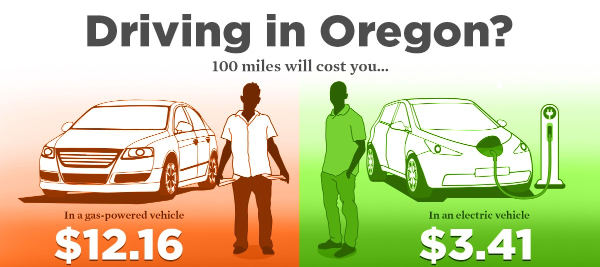

| Advantages | Abundant amount of space due to less parts |
|---|---|
| Environmentally safe since they don't emit pollution | |
| Great perfomance since they use elctric motors which give instant torque | |
| Lower maintenance and charge up costs in comparison to gas-powered vehicles | |
| Disadvantages | They are expensive to purchase since they are still new |
| The battery disposal process is still a work in progress | |
| Low range which means you have to charge more often than refuel | |
| Hard to find charging stations in some areas |